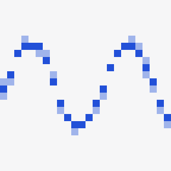

Minh Quan Nguyen
AI researcher · Founder · Ho Chi Minh City
I study how machines can anticipate human actions from the first few frames of 3D skeleton motion, and I build technology that protects people when it counts.
Bachelor of Artificial Intelligence at UTS (transnational programme with HCMUT). Research Assistant at the HCMUT-URA Research Group, CEO of Odylytics, and Venture Analyst at B71.
email/ cv/ linkedin/ orcid/ github
Open to research collaborations
Quan’s research interests lie in early action anticipation from 3D skeleton motion, causal and temporal modeling, and physics-informed learning from wearable data.

Leveraging 3D Skeleton Motion for Early Action Anticipation via Spatio-Temporal Causal Modeling
IEEE KSE, 2026 · B rank
Accepted (oral) · orcid
We anticipate an action from the first few frames of 3D skeleton motion by modeling spatio-temporal causal structure.
Transition-Aware History Modeling for Skeleton-Based Early Action Anticipation
DAI, 2026 · Q1
Under review · orcid
We model how an action’s history transitions over time to improve skeleton-based early action anticipation.

Consumer Electronics Physiological Data as a Foundation for Physics-Informed Neural Networks
Ongoing, 2026
We study physiological signals from consumer electronics as a data foundation for physics-informed neural networks.
VeriReason: Verifying and Repairing the Principal Reasons of LLM-Written Credit Denial Notices via Group Interventions
Ongoing, 2026
We verify and repair the principal reasons stated in LLM-written credit denial notices using group interventions.
- Jul 2026 — nowCEO & Co-founder · Odylytics
- Aug 2026 — nowVenture Analyst · B71 (NUSX)
- Sep 2026 — nowResearch Assistant · University of Technology Sydney
- Mar 2026 — nowResearch Assistant · HCMUT-URA Research Group
- 2025 — 2028University of Technology Sydney
Bachelor of Artificial Intelligence · GPA 3.8 / 4.0 · WAM 88% (High Distinction)
- 2025 — 2028HCMC University of Technology
Transnational education with UTS
- 2018 — 2025Lawrence S. Ting School
High school · Top 5% · SAT 1500 · GPA 3.8 / 4.0 · IELTS 8.0